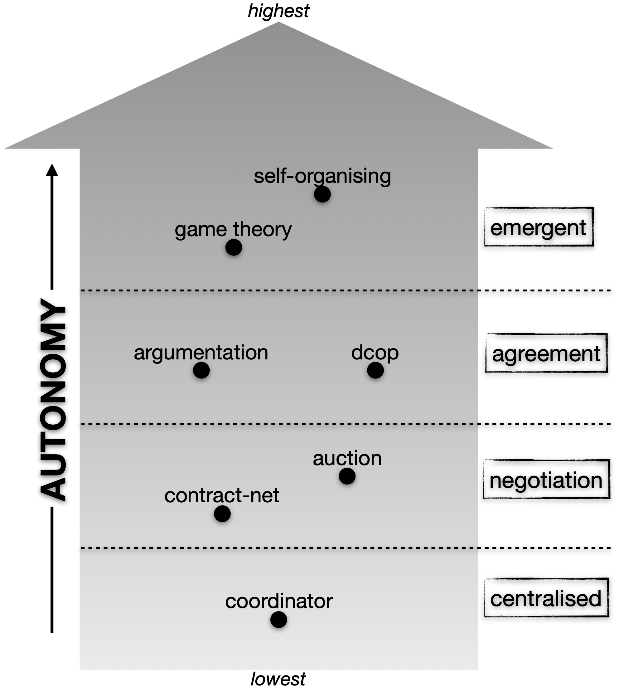
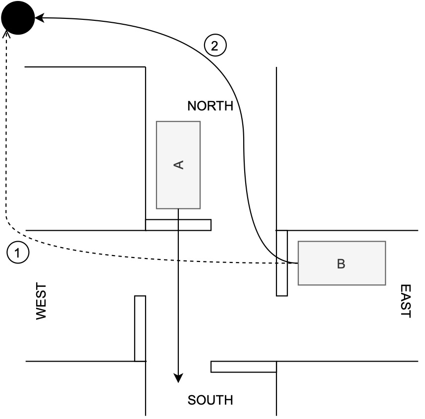
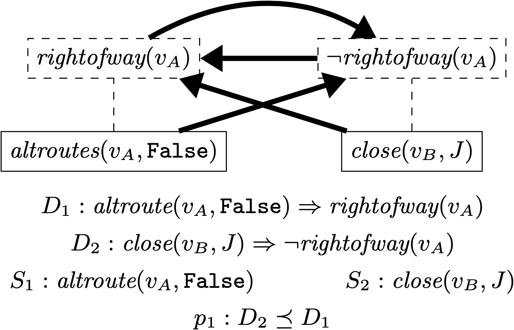
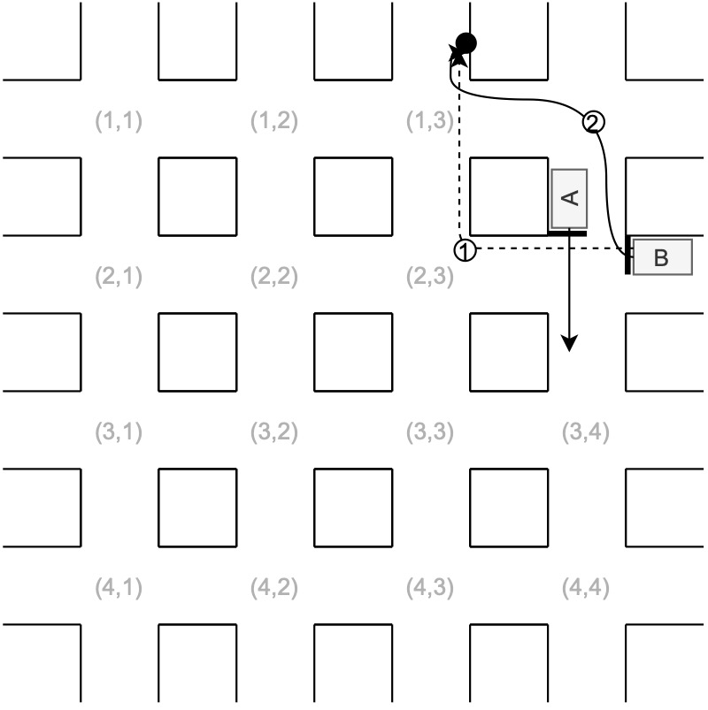
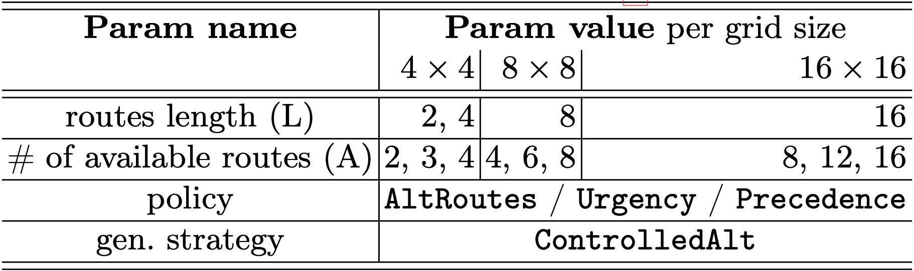
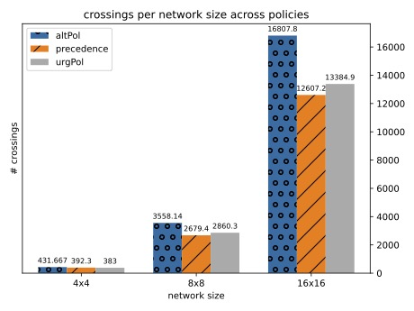
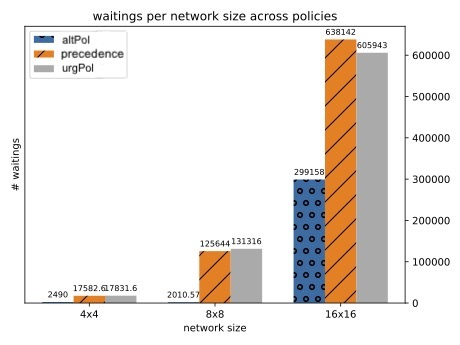
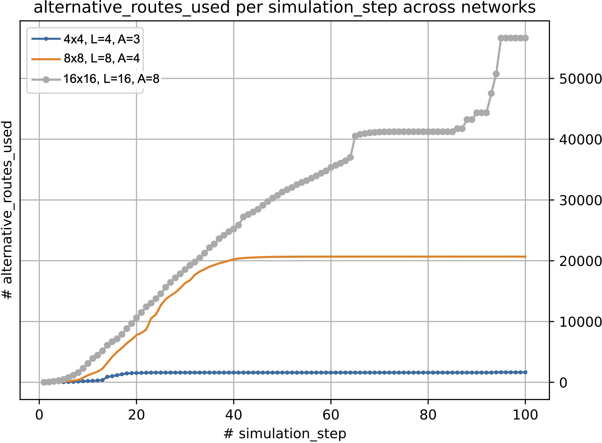
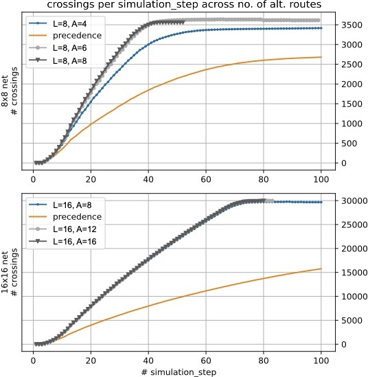
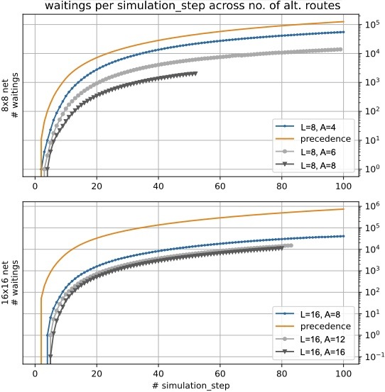

24th International Conference Principles and Practice of Multi-Agent Systems, 16/11/2022
Cooperative driving at intersections through agent-based argumentation
Stefano Mariani, Dario Ferrari, Franco Zambonelli
Università di Modena e Reggio Emilia
Motivations

- self-driving cars in the streets
- autonomous driving $\longrightarrow$ cooperative driving [1]
- intersection crossing pervasive problem
- many approaches available in analysed literature [2]
[1] Englund et al.: "The grand cooperative driving challenge 2016: boosting the introduction of cooperative automated vehicles." IEEE Wireless Communications
[2] Mariani et al.: "Coordination of autonomous vehicles: Taxonomy and survey." ACM Computing Surveys
Goal & Contributions
argumentation-based coordination to complement existing approaches
- argumentation process
- proof-of-concept (PoC) simulator
- evaluation
Vision

- B: "I'm going straight"
- A: "I'm going straight, too"
- B: "We are in conflict"
- A: "I can't solve it, can you?"
- B: "I could go right and reach destination anyways"
- A: "Fine, agreed!"
Argumentation
- "rules of the game" for human disputes resolution
- computationally exploited for, e.g., coordination in MAS
- in a nutshell
- arguments as (logic) facts accepted as true until attacked
- attacks $\approx$ conflicting facts
- inference rules can be attacked, too
- goal: establish valid arguments ($\approx$ not attacked)
Preference ordering

- what if all arguments are attacked??
- attach "strength" to arguments and inference rules to break symmetry
- our proposal: pluggable conflicts resolution policy (e.g. alternate route)
Argumentation process
- incoming vehicles data $\mapsto$ argumentation graph
- $\forall$ vehicle check conflicts
- no: vehicle gets right of way
- yes: argue with conflicting vehicles
- conflict solved?
- yes: give right of way accordingly
- no: resolve with resolution policy
Evaluation setup


- spawn vehicles at each intersection with $A$ alternative routes of length $L$ each
- trigger argumentation process when vehicles within intersection range
- $\mathtt{AltRoutes}$ = alternative routes policy
- $\mathtt{Urgency}$ = urgency policy
- $\mathtt{Precedence}$ as baseline
- update vehicles' data (e.g. pos, speed, route)
codebase: link in paper
Comparison of policies

throughput: slightly increased

delay: greatly decreased
exploiting alternative routes improves both throughput and delay w.r.t. urgency and precedence
Conflicts resolution

plotting alternative routes usage in time across networks size and routes length
- the larger the network
- $\rightarrow$ the more the vehicles
- $\rightarrow$ the more the conflicts (likely)
- $\rightarrow$ the more the alternative routes exploited (likely)
Impact on throughput

plotting throughput in time across networks size and number of alternatives
- argumentation always better than precedence
- the more the alternative routes $\rightarrow$ the better the throughput
- "saturation" when $A = \frac{\text{network size}}{2}$
Impact on delay

plotting delay in time across networks size and number of alternatives
- similar but "stronger" results than throughput
- no "saturation" effect observed
Conclusion & outlook
- performance improvements
- complementary, not in competition, with State Of The Art (SOTA) strategies
- plug-in conflicts resolution policy
- argumentation process can be decentralised
- naturally suitable for mixed scenarios humans / self-driving
- naturally explainable
- integrate with SOTA micro-traffic simulator (e.g. SUMO, MATSim)
- realistic vehicles' dynamics
- cost of changing route
- translate SOTA strategies and evaluate
- increase simulations scale
- consider NLG for generating explanations
Thanks
for your attention
Stefano Mariani
Università di Modena e Reggio Emilia